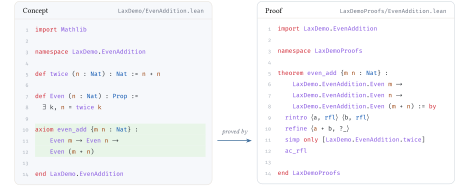

A new result passes through several stages before it becomes part of mathematics. It is
- proven: a rigorous argument is found and checked;
- explained: written up so that others can follow why it holds;
- accepted: read, questioned, and vouched for by the community;
- absorbed: restated in its natural generality, connected to its neighbours, and built upon.
AI systems and formal proofs now handle the first stage at scale. Lax is built for the stages that come after. It aligns formal proofs with natural-language arguments, lemma by lemma, so that the paper remains the place where a result is explained, and every step of that explanation is certified. It lets mathematicians review and endorse what is stated, and it lets later work import those statements, so that results grow into a connected body of theory.
What a submission is
A Lax submission is a commit in a public git repository. It holds
- concepts: small Lean files, one per mathematical definition or claim.
A concept pairs a natural-language statement, as it would appear in a paper,
with a faithful Lean encoding. Claims are stated as Lean
axioms, without proof. Concepts depend only on other concepts and on mathlib, and they are written in plain, tactic-free Lean that a reader without a proof-assistant background can follow. They are the part of a submission a mathematician can check for meaning, and the part that later submissions build on; - proofs: a separate Lean package that restates each claim as a
theoremand proves it. Each proof records which concepts it rests on and which one it concludes. Proofs may be long and involved, Lean's kernel certifies that they prove exactly the published claim, and that is the only judgement the archive passes on them. Explaining the argument is the paper's job; - a paper: a LaTeX document whose passages are annotated with the concepts and proofs they correspond to, for the headline result and for the lemmas along the way. The same source can go to arXiv and to Lax; the website renders it reflowed for the screen, beside the as-printed PDF, with the Lean beside each marked passage.
The concepts are the surface of the archive: they are what the website shows, what readers review and endorse, and what later submissions import. The proofs are the evidence behind that surface. The paper is where the result is explained, with every marked step of the explanation backed by a proof.

Together, the proofs of a submission form its proof network: which claims are proven outright, which are proven relative to others, and which proof obligations remain open. Any later submission can discharge an open obligation, and every result that rested on it is proven from that moment on. Stating a claim and proving it can thus be separate contributions by separate people. As submissions import each other's concepts, the archive grows into one connected body of results.
How Lax is built
Lax consists of three parts, all of them open source:
- the command-line tool,
lax, published on npm. It creates the layout of a submission, builds and previews it, and submits it. Its built-in guide (lax print instructions) is written for coding agents, so that an agent can carry a formalization from the first concept to the finished proofs; - the submission pipeline, which runs as a GitHub Actions workflow. A submission is a pointer to a commit in a public git repository; the pipeline fetches it, builds it, verifies the proofs against the concepts, and records the result in the archive's metadata repository;
- the website, a static site generated from that metadata and the built submissions, and served from GitHub Pages. Readers sign in with their ORCID iD to comment on and endorse concepts.
The archive's code, metadata, the submissions, and the generated artifacts are all public.
Where to go next
- An Introduction to Lax, itself a Lax submission, walks through concepts, proofs, and papers on a running example.
- The FAQ answers the questions we are asked most.
Who we are
Lax is a project by Édouard Bonnet (CNRS, ENS Lyon), Jan Dreier (TU Wien and HPI Potsdam), and Clemens Kuske (TU Wien and HPI Potsdam).